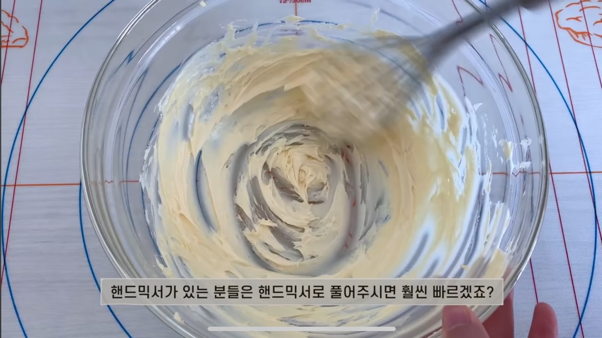
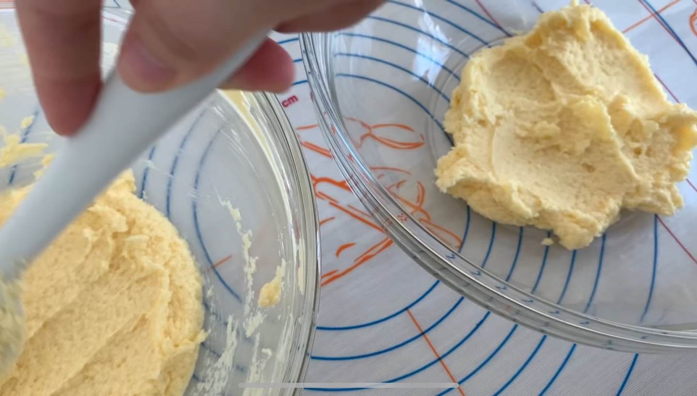
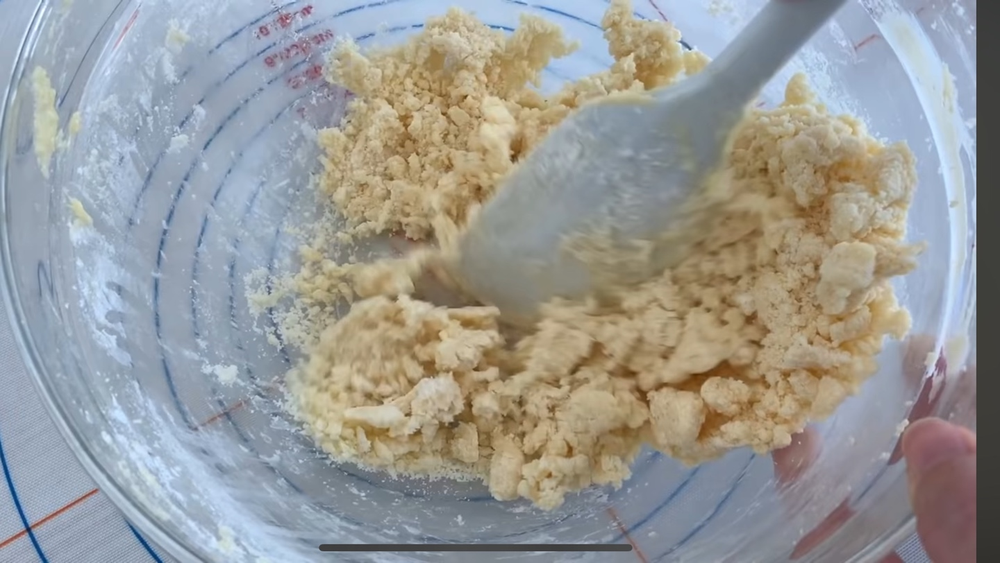
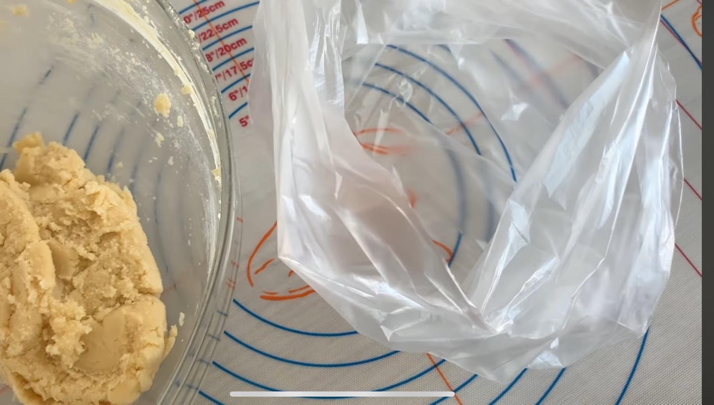
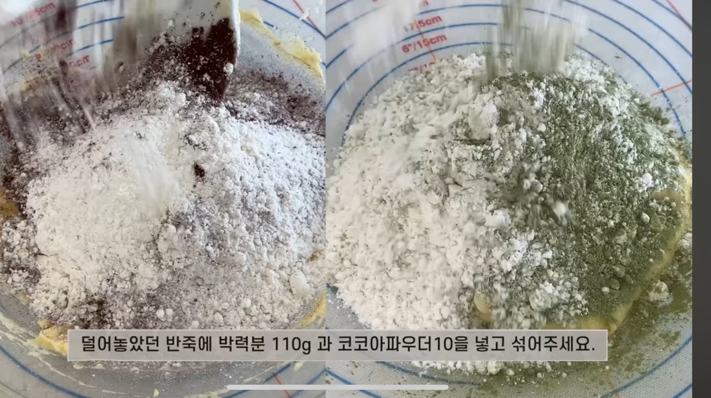
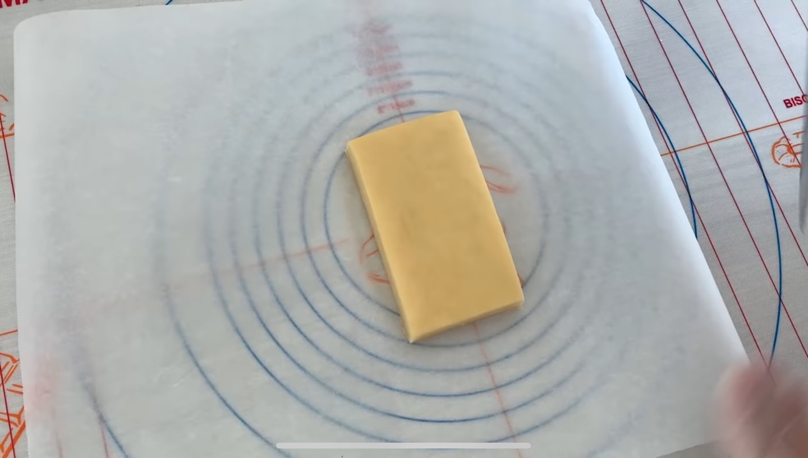
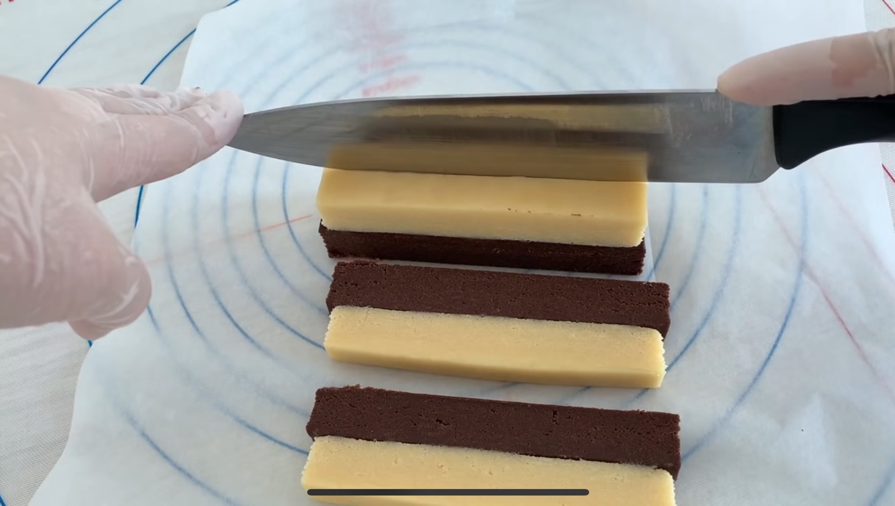
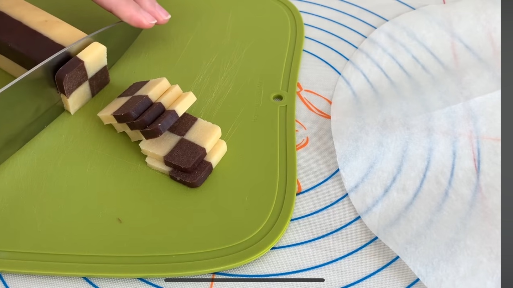
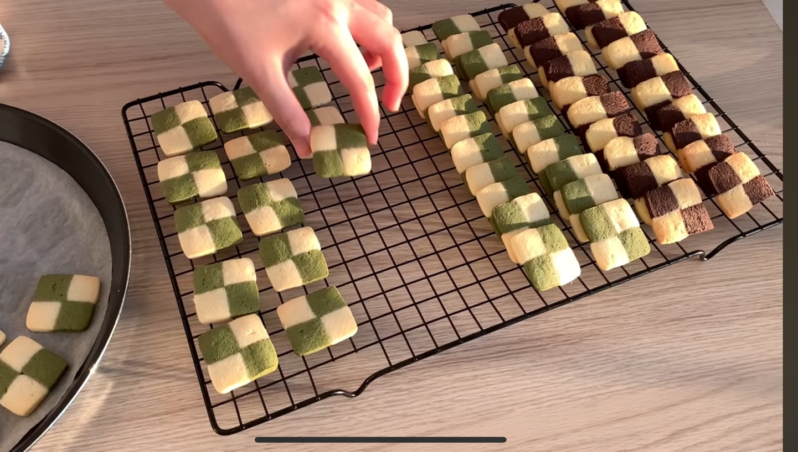
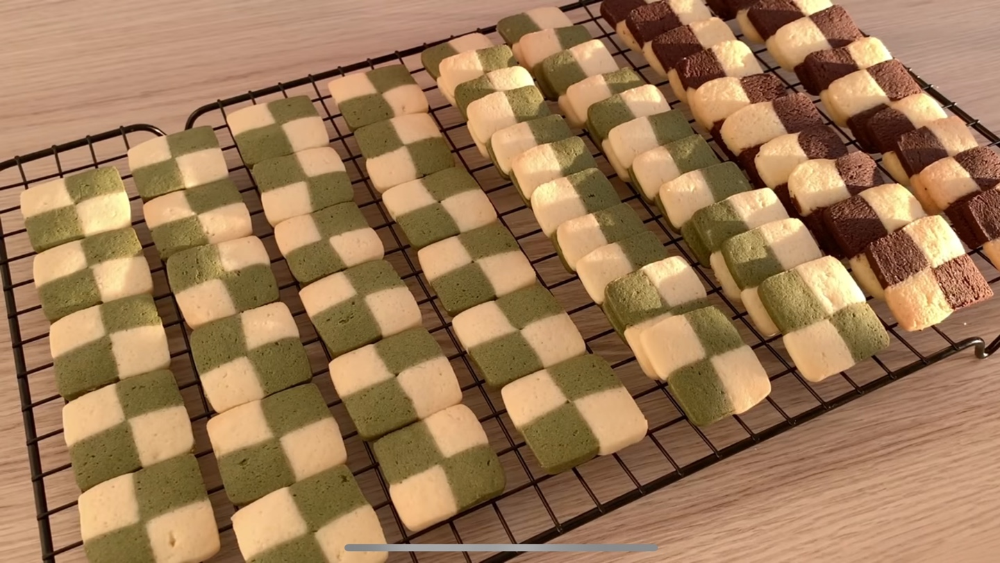

🧑🏻🍳준비 재료🧑🏻🍳
공통
- 실온에 녹인 버터 100g, 설탕 90g
- 소금 2g, 계란 1개(계란흰자 1스푼 덜어놓기)
초코 체크쿠기 반죽
- 박력분 120g(기본반죽)
- 박력분 110g + 코코아파우더 10g(초코반죽)
녹차 체크쿠기 반죽
- 박력분 120g(기본반죽)
- 박력분 110g + 녹차가루 10g(녹차반죽)
1
실온에 녹인 버터 100g을 부드럽게 풀어준다.
설탕 90g과 소금 2g을 넣고 가볍게 섞어준 뒤,
계란 1개를 넣고 골고루 섞어준다.
2
반죽을 크게 두 덩어리로 나누어준다.
3
반죽을 자르듯이 계속 섞어준다
반죽 색이 점점 진해지고 있다면 성공!
4
다 뭉쳐진 반죽은 이제 비닐에 넣어준다
비닐에 넣은 반죽을 손으로 눌러 대충 모양을 잡아준다.
5
이제 덜어놓았던 반죽에 박력분 110g과
코코아파우더 10g을 넣고 섞어준다.
녹차맛을 만들때는 코코아파우더 대신 녹차 가루를 10g 넣어준다.
6
반죽의 모양을 잡아준 뒤 밀대로 밀어준다.
이제 반듯하게 네개의 모서리를 잘라내준다.
나머지 반죽도 가로세로두께를 맞춰 잘라준다.
7
색이 다른 두 개의 반죽을 포갠 뒤 잘라준다
계란 흰자를 발라서 서로 닿는면의 색깔이
엇갈리도록 붙여준다.
8
모양을 네모낳게 잘 다듬어 준 뒤,
냉장고에서 20분 동안 휴지시켜준다.
예쁘게 잘리면 기분이 좋다.
9
180도 오븐에서 12-13분간 구워준다.
오븐마다 굽는 시간은 달라질 수 있다!
10
오븐에서 꺼내 잠시 식혀주면
모양도 예쁘고 맛도 있는 체크 쿠기
완성이다-!